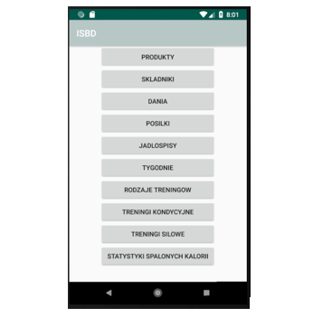
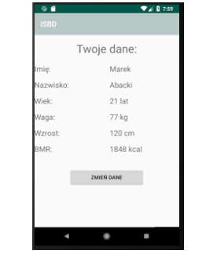
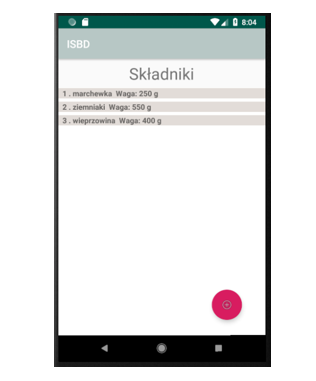
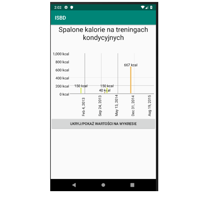

Diet/Workout Tracking App
GithubAbout project
This 2-man project focused around managing complex Room database on Android. The application allowed to track progress in physical exercise with addition to log diet. This approach allowed to look for correlation between eaten macroingredients and achievements in training.
 Options menu.
User is able to determine what ingredients are used and and what ammount to get instant calculation of carboxinades, proteins and fat. This way its possible to control ammount of food eaten and apply specific training to benefit on that.
User's profile.
 Ingredients adding.
 Activity based graphs.